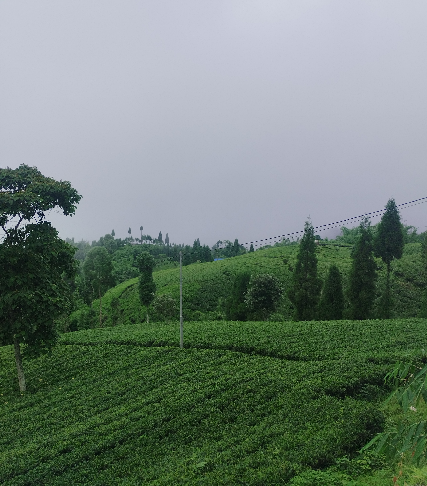

Ilam → Terhathum → Damak → Itahari
A quick weekend escape to the eastern hills of Nepal to chase the monsoon fog. Traveling through misty tea gardens down to the warm plains, letting the scenery lead the way.
scroll ↓